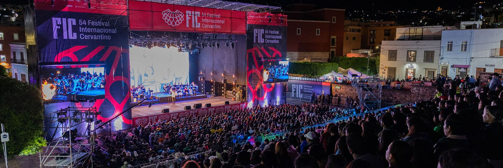

Festivals · Arts
Festival Internacional Cervantino 2027 (55th edition)
- Dates
- Dates TBA
- Location
- Guanajuato, Mexico
- Format
- In-person
- Category
- Arts
- Industry
- Performing arts / Culture
- Organiser
- Secretaría de Cultura (Government of Mexico)
- Official website
- https://www.festivalcervantino.gob.mx/
About
Official postulations portal confirms the 55th edition takes place in 2027 (October, by tradition). State tourism reported 386,300 attendances for 2026, but that page could not be read by script, so it is not used as the ranking figure.
Topics: theatre, music, dance, performing arts.
No organiser attendance figure found on the official pages checked (23 Nov 2026). Ranked by an estimated size tier 'very large' (about 100,000+ attendees; our judgement from format, venue and scale, not an official number).